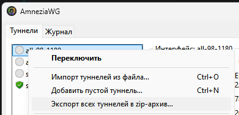

Добрый день!
Сегодня на мобильном операторе Beeline наблюдается проблемы в работе WireGuard. Такую же проблему выявили пользователи 4PDA.
У меня два договора Билайн:
Первый - на домашний интернет в квартире (московская область), если подключаешься к интернету через него, то WireGuard, поднятый на своем VDS, исправно работает (телефон, планшет, ПК).
Второй договор - мобильный интернет и связь (чисто для телефона), вот по нему уже WireGuard работать не хочет. Если же я подключаюсь по WiFi к домашнему интернету и включаю WireGuard, то все работает исправно.
Сервер один, конфигурационный файл тоже.
Также друг дал конфигурационный файл своего сервера WireGuard, на телефоне он работает исправно, и еще несколько файлов, которые дали на 4PDA.
Как можно определить проблему?
Проблема — мобильный оператор блокирует легко узнаваемый по первым 8 байт хэндшейка протокол Wireguard.
Можно что то “улучшить” в настройках для исправления данной ситуации?
Смотрите в сторону ObfuscateKey или ListenPortTCP + ObfuscateTCP.
11:35 мск, перестал подключаться WG к oracle vps sweden на AS 12389 (сз рт), 48780 (сз билайн?), подключается на AS 45027 (ру хостинг). Трассировка icmp/tcp/udp на порт WG проходит. По wireshark видно что сервер не отвечает, видно только первый пакет от клиента.
Самый простой вариант — отправить любой мусор первым UDP-пакетом, а затем устанавливать соединение.
- В конфигурационном файле клиента задать статичный
ListenPort, например,ListenPort = 56789 - Выполнить
sudo nping --udp --count 1 --data-length 16 --source-port 56789 --dest-port DEST_PORT DEST_IP - Подключаться.
рт сз
rt.cap (864 байта)
трафик nping (даже после 2-х минут пингов) перестаёт доходить до сервера после попытки подключения wg
а на билайне сработало
edit: на рт wg смог подключиться после 310 секунд nping. И еще надо добавить keepaliveinterval в peer, чтобы wg не прерывался после простоя
Got tested out on android 10
Termux and nmap
Works well, wg app connected as expects
Протестировано на android 10
Termux и nmap
Работает хорошо, wg app подключается как ожидается
Installed packages
–
ii termux-am 0.4 all Android Oreo-compatible am command reimplementation
ii termux-am-socket 1.5.0 aarch64 A faster version of am with less features that only works while Termux is running
ii termux-auth 1.4-2 aarch64 Password authentication library and utility for Termux
ii termux-exec 1:1.0 aarch64 An execve() wrapper to make /bin and /usr/bin shebangs work
ii termux-keyring 3.11 all GPG public keys for the official Termux repositories
ii termux-licenses 2.0-3 all Contains LICENSE files for common licenses
ii termux-tools 1.37.0 all Basic system tools for Termux
–
ii nmap 7.94 aarch64 Utility for network discovery and security auditing
ii nmap-ncat 7.94 aarch64 Feature-packed networking utility which reads and writes data across networks from the command line
Т.е. я в файле .conf, где графа [peer] добавляю строку ListenPort = 56789, далее подключаюсь серверу и прописываю команду из пункта 2, верно?
нет, ListenPort надо в [Interface]. Подключение к серверу через WG это самый последний пункт. Чтобы команда сработала (на винде sudo нужно убрать) нужен установленный nmap и отредактированые DEST_PORT DEST_IP на порт и айпи сервера.
Starting Nping 0.7.80 ( Nping — Network packet generation tool & ping utility ) at 2023-08-01 23:10 MSK
SENT (0.0589s) UDP 172.31.0.121:56789 > 141.94.63.228:56789 ttl=64 id=17869 iplen=44
RCVD (0.1196s) ICMP [141.94.63.228 > 172.31.0.121 Port 56789 unreachable (type=3/code=3) ] IP [ttl=46 id=39407 iplen=72 ]
Max rtt: 60.741ms | Min rtt: 60.741ms | Avg rtt: 60.741ms
Raw packets sent: 1 (44B) | Rcvd: 1 (72B) | Lost: 0 (0.00%)
Nping done: 1 IP address pinged in 1.14 seconds
исправил прошлый пост. подожди 5 минут или измени ListenPort перед новой попыткой.
sudo nping --udp --count 1 --data-length 16 --source-port 51820 --dest-port 51820 141.94.63.228
Starting Nping 0.7.80 ( Nping — Network packet generation tool & ping utility ) at 2023-08-01 23:37 MSK
SENT (0.0469s) UDP 172.31.0.121:51820 > 141.94.63.228:51820 ttl=64 id=20537 iplen=44
Max rtt: N/A | Min rtt: N/A | Avg rtt: N/A
Raw packets sent: 1 (44B) | Rcvd: 0 (0B) | Lost: 1 (100.00%)
Nping done: 1 IP address pinged in 1.12 seconds
Вроде нигде не ошибся.
При попытке подключения WireGuard клиент пишет что соединение удалось, но интернет рубится напрочь.
Значение ListenPort я ведь должен везде установить тот, который указан в приложенной фотографии, верно?
Порт wg сервера это одно. ListenPort/SourcePort это другое. Они скорее всего могут быть одинаковыми, но я тестил с разными. Меняй ListenPort/SourcePort и пробуй снова, wg подключай только после nping и сразу же
nping --udp --count 1 --data-length 16 --source-port 56789 --dest-port 1234 141.94.63.228
[Interface]
ListenPort = 56789
[Peer]
Endpoint = 141.94.63.228:1234
не работает? пробуй count 310 и data-length 1400. И кстати wg клиент и nping должны быть на одном устройстве, с разных не выйдет
Могу подтвердить, что наблюдаю блокировку Wireguard до VPS во Франции (OVH) на случайном порту у Ростелекома (12389). udp2raw с MTU 1280 пока что помогают.
Max rtt: N/A | Min rtt: N/A | Avg rtt: N/A
Raw packets sent: 1000 (1.428MB) | Rcvd: 0 (0B) | Lost: 1000 (100.00%)
Nping done: 1 IP address pinged in 1001.26 seconds
Для интереса заказал готовый сервер с WireGuard в КЗ. Все работает. Проверял на сайтах овд инфо, medium.com, twitter для теста. Странно.
udp2raw это надо устанавливать на чистом сервере или как-то оборачивается на WG?
Первая часть поста Очень информативна, к чему это?
Если это про самый первый пост, то просто не мог отследить логику работы. По проводу работало, по мобильной связи нет, хотя сервер один и тот же. Но вчера уже все отвалилось.
Нужно и на сервере, и на клиенте.
Сегодня столкнулись с подобным на мобильных сетях мегафона и мтс’а в Калининграде. Каково есть решение для ios и android ? Если с линуксом и виндой nmap/nping. То как быть на телефонах ?
Правим конфиг wg, добавляем ListenPort = 56789 в секцию [Interface]
ставим termix из плэй маркет
в термикс:
apt-get update
apt-get upgrade
pkg install nmap
nping --udp --count 1 --data-length 16 --source-port 56789 --dest-port ВашПортWG ВашАдресWG
Переключаемся в wg и обмениваемся рукопожатием. Тестировал на мобильном Билайн ЮФО, с пятницы не проходило рукопожатие.
За решение благодарю ValdikSS и участников обсуждения
Спасибо, тоже всё заработало, но так подозреваю что не надолго, рано или поздно это прикроют. Пытаюсь через shadowsocks-libev настроить, но что-то пока не выходит, может кто уже поднял shadow socks с wireguard и есть ссылки на рабочие инструкции?
а как эти команды выполнит в windows
Надо установить Nmap.
вот по этому скрипту поставил, но wg мне все же больше нравился, shadowsocks не хватает множественной выдачи ключей (чтоб для каждого пользователя свой ключ был)
Вы немного не поняли. Пытаюсь поверх shadowsocks пускать wg.
пардон, самому интересно, попытался поднять вчера аналогичное, но wg на андроид девайсе упорно не видел локалхост через прокси
у меня на nmap выдает вот это после ввода команды
C:\Program Files (x86)\Nmap\nmap.exe: unrecognized option `–udp’
See the output of nmap -h for a summary of options
Команда будет выглядеть так:
"C:\Program Files (x86)\Nmap\nping.exe" --udp --count 1 --data-length 16 --source-port SRC_PORT --dest-port DEST_PORT DEST_IP --unprivileged
Выполнить подобную команду можно через любую netcat-подобную программу, не принципиально, чтобы это был ncat. Главное — отправить любой пакет с мусорными данными с заданного порта источника на заданный IP-адрес и порт назначения.
Привет. WG работает с пингом на теле2, спасибо! На iOS ставил для пинга SocketTool и UDP/tcp/rest network utility. Любая из них работает.
{kind=link}
Значит на вашем рт для оракла было активировано другое правило – ожидают входящие для проверки. В таком случае исходящий активирует слежку, но ничего не может изменить. Секунды это таймаут для ожидания. Для проверки делайте дампы на сервере тоже.
А где в первом приложении возможность указать listen port? Listening port вроде бы только про возможность слушать на upd порте, а не указание его как исходного для отправки
Это в настройках wg на клиенте надо сделать
{kind=link}
Нет, вопрос в другом. В приложении wireguard listen port у меня выставлен, но идея обмана ТСПУ вроде бы в том, чтобы пинговать vpn-сервер с того же порта, на котором wireguard слушает, а такой функциональности в udp/tcp/rest network utility я не наблюдаю (отправить на заданный порт – да, с заданного порта – нет).
Просто отправка в моем случае не работает, к сожалению, сессия все равно рвется.
Был бы признателен, если кто-то сможет попробовать и проверить это решение: GitHub - Snawoot/wg-decoy: Decoy handshake for Wireguard
Смысл его работы заключается в том, чтобы обменяться короткими пакетами в начале UDP-сессии с сервером wireguard. Вероятнее всего, это должно сбить с толку фильтр хендшейков, по которым детектят вайргард.
И ещё один вариант обхода блокировки Wireguard и UDP OpenVPN – завернуть их в DTLS. Вот обёртка, которая позволяет это сделать: GitHub - Snawoot/dtlspipe: Generic DTLS wrapper for UDP sessions.
Было бы хорошо, если кто-то смог бы протестировать и сообщить о результатах.
Я попробовал dtlspipe в нескольких вариантах. У меня отлично
работает. Радует, что настройка очень простая. Скорость конечно падает, но для работы мне подходит. Тестировал на MTC/Tinkoff Mobile.
Относительная разница в скорости:
- dtlspipe + wireguard - 2 Mbit/s
- cloak + dtlspipe + wireguard - 2 Mbit/s
- cloak + wireguard - 7 Mbit/s
wg можно завернуть в GitHub - wangyu-/udp2raw: A Tunnel which Turns UDP Traffic into Encrypted UDP/FakeTCP/ICMP Traffic by using Raw Socket,helps you Bypass UDP FireWalls(or Unstable UDP Environment) как по мне так это несет самые низкие накладные расходы, скорость почти не просаживается
Там желательно MTU у wireguard поменьше поставить. Например MTU = 1280 в секции [Interface].
Плюс наилучших результатов – 71.59 Mbps на проводе я достигал с опцией на клиенте -ciphers TLS_PSK_WITH_AES_128_GCM_SHA256 в то время как почти все остальные шифры давали где-то 50 Mbps. TLS_PSK_WITH_AES_128_CCM_8 ещё давал 64.30 Mbps.
P.S. Опция -ciphers – новая, поэтому желательно обновиться на последнюю версию.
Здравствуйте, а как это сделать (метод dtlspipe и Udp2raw-tunnel), можете написать небольшую инструкцию, если нетрудно?
Интересует рабочий вариант обхода блокировки Wireguard для Android и Windows.
Я в этом деле новичок, если что)
Пример настройки udp2raw сервера в Debian
- Заливаете бинарник с гитхаба в домашний каталог
- Выполняете команду установки в какой-нибудь каталог
sudo install -m 755 ~/udp2raw_amd64_hw_aes /usr/bin/ - Создаёте файл службы
/usr/lib/systemd/system/udp2raw.serviceпримерно со следующим содержимым:
[Unit]
Description=Service for udp2raw tunnel
Documentation=https://github.com/wangyu-/udp2raw
ConditionFileIsExecutable=/usr/bin/udp2raw_amd64_hw_aes
ConditionPathExists=/etc/udp2raw/server.conf
DefaultDependencies=no
After=firewalld.service networking.service
[Service]
Type=simple
User=nobody
Group=nogroup
ExecStart=/usr/bin/udp2raw_amd64_hw_aes --conf-file /etc/udp2raw/server.conf
PIDFile=/run/udp2raw.pid
AmbientCapabilities=CAP_NET_RAW CAP_NET_ADMIN
Restart=on-failure
[Install]
WantedBy=multi-user.target
- Создаёте файл конфигурации
/etc/udp2raw/server.confпримерно со следующим содержимым:
# Server
-s
# Listen address
-l 0.0.0.0:<порт сервера для прослушивания (правила брандмауэра не действуют)>
# Remote address
-r 127.0.0.1:<порт локального сервера WireGuard>
--key <случайно сгенерированный ключ-пароль без кавычек>
--raw-mode faketcp
--hb-len <какой-нибудь размер серверного пакета keep-alive>
--mtu-warn 1500
- Обновляете список служб командой
sudo systemctl daemon-reload - Добавляете службу в автоматический запуск
sudo systemctl enable udp2raw.service - Запускаете службу
sudo systemctl start udp2raw.service ?????- PROFIT
Пример настройки udp2raw клиента в Windows
- Скачиваете бинарник с гитхаба
- Создаёте ярлык
"C:\Program Files\udp2raw\udp2raw_mp_wepoll.exe" --conf-file ./config/client.conf - Создаете файл конфигурации
C:\Program Files\udp2raw\config\client.confпримерно со следующим содержимым:
# Client
-c
# Listen address
-l 127.0.0.1:<порт прослушивания к которому будет присоединятся клиент WireGuard>
# Remote address
-r <ip адрес вашего сервера>:<порт прослушивания из серверной конфигурации>
--key <ключ-пароль из серверной конфигурации>
--raw-mode faketcp
--hb-mode 1
--hb-len <какой-нибудь размер клиентского пакета keep-alive>
--mtu-warn 1500
- Запускаете ярлык и убеждаетесь в установке соединения
- Поключаете клиент WireGuard к адресу 127.0.0.1 и порту из клиентской конфигурации
- Вручную подбираете MTU для WireGuard чтоб пакеты бегали
?????- PROFIT
Ведром не пользуюсь, если пользоватся в домашней сети для браузинга, то можно поднять локальный socks5.
Доброго времени суток! Нету информации по мотивам блокировки WireGuard - хотят блокировать только трафик заграничный? или местный тоже заблочат?
Алтайский край, Ростелеком - WireGuard до германии перестал работать в классическом виде два дня назад. Корпоративная сеть на WireGuard продолжает работает. Задался вопросом пора или нет уже переделывать сеть на работе, связь между 15 филиалами. Что думаете ?
Чебурнетную хотят оставить. Но эта же контора блокировала локалхост, поэтому местами чебурнет лажает.
Пока получается китай-чучхе сценарий. Белые списки адресов и талоны на интернет.
Информацию по проблемам направлять на адрес электронной почты support_asbi@noc.gov.ru в форме таблиц (для ЮЛ и ФЛ, отдельно, прилагаются.
Оперативный дежурный ЦМУ ССОП
8 800 600-19-62
+7(495)748-13-18
+7(495)123-31-04 доб. 87220
Запрос на исключение IP VPN(для ФЛ).xlsx
Запрос на исключение IP VPN(для ЮЛ).xlsx
Можете бегать по протоколам с неизвестными вводными. Но белые списки протоколов с MITM уже не кажутся далекой перспективой.
UPD (@darkk): файлы можно взять в канале ОрдерКом.
Ужасно (( … на что можно лучше в перспективе перевести сеть между офисами, вместо WireGuard / OpenVpn?
Заверни просто в udp2raw или подобное, это самое простое.
Кажется, nping уже не помогает.
Кто-то писал, что надо, чтобы сервер тоже вначале ответил чем-то помимо WG-хендшейка. Можно попробовать wg-decoy повесить на сервере и перед подключением клиентом обмениваться несколькими пакетами с того же самого порта, который будет использовать клиент WG.
На сервер ничего повесить не могу. Но пробилось все-таки после долбежки.
Here is another possibility you can test. Disguise your WireGuard connection as HTTP/3.
Здравствуйте, напишите плиз для ubuntu
wg / udp2raw
Приветствую! Должно работать в Ubuntu без изменений (и на любом дистрибутиве с подсистемой systemd, такие как AlmaLinux, Arch Linux, Fedora Server, openSUSE и т.п.). Можно убрать зависимость firewalld.service — не работают правила nftables c RAW сокетами. Начните делать и напишите конкретный вопрос, что не получилось из инструкций в мануалах.
Я полный новичок в этом, пробовал ставить Shadowsocks но при подключении к shh он показывает реальный ip. Получается Shadowsocks не все шифрует?
У вас в примере написано
Заливаете бинарник с гитхаба в домашний каталог
Я так понимаю это команда “wget”
напишите плез инструкцию скопировал-вставил
wg + udp2raw
а так же хотел протестировать и этот вариант, но не найду интрукцию
cloak + wireguard
wireguard уже стоит на сервере
Вы про Last login from? Надо подключаться и логинится через SOCKS5 прокси (два раза, второй раз должен показать IP прокси).
Хотели сказать не всё туннелирует? SS это SOCKS5 прокси достаточный для web браузинга. Для IP туннеля необходимо поднять что-то вроде tun2socks, сам не пользовался таким костылём, ищите темы на форуме.
Для меня wget слишком сложен. Заливаю файлы через SFTP. Установите Bitvise SSH Client — удобно тыкать мышкой.
Такую инструкцию писать не умею. В моей предполагается что исполнитель произведёт замену самостоятельно.
Cloak пока не настраивал, не подскажу, только скомпилировал себе на всякий случай.
Значит, потратив некоторое время на изучение вопроса, сможете и остальное донастроить.
Скорость сильно деградирует от такой связки, есть же AmneziaWG.
Хотелось бы что-то свое, без передачи кому то полного доступа к серверу - root прав
А причем здесь передача прав? Идете на github и компилируете сами две утилиты, одна интерфейс поднимает, вторая конфиг для него применяет.
напишите понятным языком пожалуйста для пенсионера
как установить это на ubuntu и windows этот вариант amnezia-vpn ?
wg уже должен стоять ?
Я так понял, он как раз и не хочет всю гармошку ставить, что-то писал про root права.
я недавно для себя адаптировал wg-easy под AmneziaWG. можете попробовать, но, правда, сейчас там нельзя настраивать параметры самого AmneziaWG, они случайно генерируются при запуске, думаю, потом допилю
да, не хочу отдавать root
как установить wireguard-go на ubuntu в одну команду , я так понимаю это модификация wireguard ?
Это user-mode реализация протокола wireguard, написанная на языке GO.
В противовес kernel-mode реализации в виде модуля ядра linux.
Это то, оригинал чего что использовать не следует, если не понимаешь зачем.
Но амнезисты пока не сделали kernel версию, потому приходится использовать их мод wg-go
Для ubuntu кстати есть ppa и даже вроде с ядерной версией, хотя амнезия ее не анонсила. Пробуй оттуда ставить: PPA packages : Iurii Egorov
WireGuard блокируется на Ростелеком Москва. Сервер - VPS в Европе.
Отправка “мусорного” пакета не помогает?
Сегодня вечером пришёл домой, увидел что не работает WG, тоже частный VPS в европе, ребутнул сервак – не помогло. Нашел в закладках WireGuard DPI обход РКН - Windows · GitHub . Сделал и все заработало. Походу опять начали блочить хендшейк.
AmneziaWG полёт нормальный.
Не в курсе, а как организовать? Просто по UDP рандомную хрень отправить? Есть уже утилита?
Я конечно не эксперт, но по-моему это реализовано по ссылке которую я скинул 
Как это применить к роутеру?
рт сз, через amneziawg сделал только мусорные пакеты, с обеих сторон одинаково 100 пакетов, от 40 до 70 байт, это не помогает, после подключения трафик идёт 5 секунд, затем блочится только исходящий от сервера, входящий на сервер продолжает идти. если поменять заголовки пакетов s1,h2,… то всё начинает работать и без мусора
например
ListeningPort=1234
PreUp=nping --udp --count 10 --source-port 1234 --data-length 50 --dest-port server_port server_ip
и обязательно добавить PersistentKeepalive=15
но мне на рт не помогло, в начале года еще работало
Урал: вчера на домашнем проводе в районе 21-00 МСК сдох личный wg до сервера в EU. Ожил примерно в 8-00 МСК.
С мобилок (4G мегафон) так и не ожил.
Можно для этой цели использовать форк стандартного клиента WG от амнезии AmneziaWG. Это не их полный клиент AmneziaVPN, а именно форк внешне не отличающийся от стандартного клиента. Накидать в него пару цифр (не обязательно таких же как на скрине ниже) и использовать с обычным сервером WG.
{kind=link}
Сам сабж перестал сегодня работать по проводу (ЭР телеком) 92байта приняты. Через форк AmneziaWG с настройками выше (либо любыми другими) заработал.
Только, отличие AmneziaWG от собственной первоначальной отправки пинга в том, что сам ты один раз отправляешь мусор, а Amnezia перед каждым handshake, вроде как. Оба метода имеют как преимущества, так и недостатки. Мусор перед каждым handshake, наверное, немного занижает скорость и напрягает сервер, зато соединение не отвалится при реконнектах интернета, когда DPI просыпается (но у меня такого давно не было).
Для тех, у кого работает способ с пингом сервера перед подключением, можно это автоматизировать. В конфиге в [Interface] дописать:
ListenPort=56789
PreUp=nping --udp --count 1 --data-length 16 --source-port 56789 --dest-port {порт сервера} {IP сервера}
На Windows скрипты по-умолчанию запрещены.
Как разрешить: wireguard-windows/docs/adminregistry.md at master · WireGuard/wireguard-windows · GitHub
Помогло, но наверное скоро тоже исправят…
Вот можно в конфиг этот же скрипт поместить. Как включить скрипты в windows уже тут выложили.
ListenPort = 56123
PreUp = powershell -Command “$wgListenPort = 56123; $wgIP = ‘айпи_сервера’; $wgPORT = порт_сервера; $EndPoints = New-Object System.Net.IPEndPoint([System.Net.IPAddress]::Parse([System.Net.Dns]::GetHostAddresses($wgIP)), $wgPORT); $Socket = New-Object System.Net.Sockets.UDPClient $wgListenPort; $SendMessage = $Socket.Send([Text.Encoding]::ASCII.GetBytes(‘:)’), 2, $EndPoints); $Socket.Close();”
Пробовал wg через cloak, shadowsocks - но они уперлись в процессор слабого vps, даже без шифрования в случае первого.
Попробовал GitHub - kevinxucs/udpmask: UDP packet obfuscation tool и GitHub - ebarnard/udp_obfs: UDP Traffic Obfuscator . В итоге входящая скорость на клиенте поднялась с 100 до 300 мегабит, а вот исходящая по-прежнему не более 50, что критично(на обоих программах одинаково). При этом значимой нагрузки на процессор нету.
При этом напрямую через wg раньше проблем не было, а через VMess(v2fly) без wg до сих пор нет (300/300).
Это было бы неплохим решением до тех пор, пока не сломают UDP совсем. Не нужно менять клиента на венде.
Что я упускаю?
А для 3x ui wireguard как-то можно пофиксить? Чтобы тоже мусорные пакеты добавились или еще что-то.
Смотрел wg конфиг варпа что hiddify создает и вот там красота конечно. Жаль такой конфиг нельзя экспортировать на роутер.
Господа, подскажите по WG|Warp на ростелекоме домашнем. Сам потестить не могу, т.к. на ТТК сижу.
За период с мая-июля этого года по сей день блокировали протокол хоть раз?
И что скажете про опцию Noise Count в hiddify? Она помогает от блокировки варпа? Работает ли эта опция в других клиентах, например warp-cli? Можно ли менять этот параметр произвольно только на стороне клиента по аналогии с солью у outline?
Есть клиент под венду WireSock, который умеет отправить шендшейк через сокс5 (в некобокс а далее через хитрую проксю). Думаю потестить для РТК. Но надо проверить, заработает ли вообще с варпом этот вариант. Если да, то можно будет гонять тот же ютуб в варп, обойдя блок по хендшейку (еще лучше будет работать, чем через личный прокси сервер - хопов меньше и хосты для загрузки видео выдавать будет без ошибок). А хитрую проксю лишний раз не гонять - только для открытия блокнутых сайтов.
Пишу, еще ничего не протестив мысли вслух. Вообще WG не пользовался никогда. Пересел из SS сразу на “хитрые” прокси. И вот уже думаю, не зря ли я это пишу тут 
То же вопрос. На телефоне через nekobox спокойно работает метод --udp-fake 3, но вот как это сделать в настольной версии? Плюс мне не понятно, DPI влияет ли на трафик VPN wireguard WARP (у меня варп профиль зашит в WG). Как на винде через GBDPI сделать udp fake? @ValdikSS могу я просить вашей помощи?
Wg на сервере в пределах страны по-прежнему работает?
GBDpi не работает с UDP
Хмммм… А есть способ тогда фейкать udp пакеты не изменяя сам конфиг WG?
nmap, можете сделать скрипт чтобы слал так несколько фейков, а потом коннектился по ВГ
nping --udp -p [port] -c1 [serveraddress] --data “[fake packet]”
GitHub - SenseUnit/dtlspipe: Generic DTLS wrapper for UDP sessions - это точно работает? я не понимаю как этим пользоваться с такой инструкцией
Нет, не точно – 100% гарантии вам никто не даст. Но я точно знаю, что даже в Китае оно достаточно успешно применяется.
Инструкция в разделе Usage. Если коротко, то нужно добиться, чтобы dtlspipe client был запущен там, где клиент WG, а dtlspipe server там, где сервер WG, параметры запуска увидите по примеру. Тогда клиент wireguard уже настраивается на соединение с портом dtlspipe client, и так далее по цепочке к самому серверу WG. Но при этом нужно добиться, чтобы WG не заворачивал в VPN трафик от самого dtlspipe. Один из вариантов как это сделать – нарисовать исключения адресов так, чтобы IP-адрес сервера в них не попадал, что и показано в инструкции.
попробовал, не работает
что то такое пишет
> [2024-08-22 18:34:12][INFO]new packet from 127.0.0.1:50493,conv_id=6e55325e
> [2024-08-22 18:34:13]INFOsent tcp syn
> [2024-08-22 18:34:14]INFOsent tcp syn
> [2024-08-22 18:34:15]INFOsent tcp syn
> [2024-08-22 18:34:16][INFO]state back to client_idle from client_tcp_handshake
> [2024-08-22 18:34:16][WARN]udp fd connect fail -1 Invalid argument
> [2024-08-22 18:34:16][WARN]create udp_fd error
> [2024-08-22 18:34:16][WARN]get_src_adress() failed
> [2024-08-22 18:34:17][WARN]udp fd connect fail -1 Invalid argument
> [2024-08-22 18:34:17][WARN]create udp_fd error
> [2024-08-22 18:34:17][WARN]get_src_adress() failed
> [2024-08-22 18:34:17][WARN]udp fd connect fail -1 Invalid argument
> [2024-08-22 18:34:17][WARN]create udp_fd error
> [2024-08-22 18:34:17][WARN]get_src_adress() failed
> [2024-08-22 18:34:17][WARN]udp fd connect fail -1 Invalid argument
> [2024-08-22 18:34:17][WARN]create udp_fd error
> [2024-08-22 18:34:17][WARN]get_src_adress() failed
> [2024-08-22 18:34:18][WARN]udp fd connect fail -1 Invalid argument
> [2024-08-22 18:34:18][WARN]create udp_fd error
> [2024-08-22 18:34:18][WARN]get_src_adress() failed
> [2024-08-22 18:34:18][INFO]source_addr is now 169.254.195.199
> [2024-08-22 18:34:18][INFO]using port 28982
> [2024-08-22 18:34:18][INFO]filter expression is [ip and tcp and src 162.159.193.9 and src port 2408 and dst port 28982]
Где-то ошибка в настройках.
Попробуйте еще udp2raw
Что сейчас можно попробовать для win10. Пользуюсь WG с конфигом Warp 1.1.1.1. Пробовал большинство методов, о которых писали тут и ничего не работает.
Публичные сервисы забанены по IP. Счётчик принятых байт будет по нулям.
а что попробовать можно из бесплатного?
но это же тоже самое
а причём тут TCP?
Драйвер npcap поставили?
да стоит, без него не запускалось вообще
А на сервере что пишет? Может hw_aes не поддерживается, тогда надо бинарник без.
У вас link-local адрес используется source_addr is now 169.254.195.199, что-то не так с настройками сетевого интерфейса.
так это и на сервер еще надо? я подключаюсь к обычному серверу варп
тогда это же юзлесс
Да, глупо было ожидать результата выполнив только половину инструкции.
Используйте это:
Варп у меня подключается.
у меня тоже подключается, но не работает
скрипт не помогает
У меня после вчерашнего Warp пробивается клиентом от Amnezia и еще warp-plus от иранцев. Мусорить Nping-ом тоже пробовал, не помогло
nping’ом надо бы подольше мусорить. Несколько минут. Исходящие порты должны совпадать. После пинга сразу коннект. Если протокол спалили, надо ждать или перезагружать модем. Дефолтный endpoint надо сменить на незаблокированный IP.
А есть более быстрый метод? На винде же сначала команду, потом быстро запускаешь туннель вг… Чет запарно как-то
В клиенте амнезии можно задать для обычного ВГ фейки
мне не помогает
А есть гайд по настройке? Или сам думай как это настраивается?
В гуглплее скачай и настрой Jc, Jmin, Jmax
Вот тут, там уже запилили отдельный клиент чисто для ВГ, где можно к обычному конфигу пределать фейки. Но и в стоковом их клиенте можно на ВГ навешать фейков
когда вчера wg порушился зарубежом в рамках РФ всё работало.
прикол конешн - домашний мемкротик понтключен через виригуард тунель к впске, которайя находится в мск, провайдер рт ина работе провайдер рт понтключен к тому же впске чтобы понтключатся к мемкротику и вэйкОнЛан делать домашнему компу когда необходимо, ну так вот мемкротик конектится ане с рабочий комп перестал конектица яна поминаю один и тот же провайдер, город etc. пришлось на мемкротике zerotier делать пока работает, но ето тож галимый варикант как по мне потому что там прост идёт порт 9993 udp и всех дел на дпи заблочить как нех делать + адреса ихних “лун” тож извесны и огроничены в количестве (прям как тор ноды), но пока работает
Самарская область, полосатый оператор. Заметил, что после 21 числа начался точечный бан wg. Если сменить порт на сервере и на клиенте, на короткое время может помочь. Потом снова 92Б принятых и тишина. Что интересно, сам бан временный, снимается через 20-30 минут. Добавил финт с мусорным пакетом, вроде живет. “Чистый” wg уже не работает.
ето всё замемчательно, и как прикажеште добовлять мусроный пакет в виндовом клиенте который не предусмотрено там ето дело вроде бы, ана мемкротике там тож всё подефолту идёт наверняка, хотя там есь опцийя preshared кей но ет не поможет наверн
На виндовс вчера у амнезии тоже вышел клиент.
Вчера попробовал, настройки которые на wg перестали работать на амнезии с мусорными пакетами заработали, в конфиг такие прописывал:
[Interface]
Jc = 5
Jmin = 50
Jmax = 1000
H1 = 1
H2 = 2
H3 = 3
H4 = 4
подтверждаю, с 22 августа наглухо залочен опенвпн и вг, даже к свежесозданному серверу не подключается к обоим протоколам.
но к тому же серверу с данными параметрами с помощью клиента amneziawg подключается
остается актуалым вопрос, можно ли на роутере с asus-merlin прошивкой как то автоматизировать отправку junk пакетов, чтобы там так же все заработало?
На домашнем интернете Билайн (мск) режут Wireguard даже внутри страны - до московской VPS скорость трафика ограничена до 60-70 мбит/с, при том, если без туннеля проверять скорость до сервера, то выдает все 500 мбит/с (вся полоса моего домашнего интернета). Проверял скорость внутри туннеля и без с использованием iperf3.
anmeziawg работает неплохо. Но вот GitHub - amnezia-vpn/amneziawg-windows-client: AmneziaWG client for Windows как я понял у них совсем не допилен? Только название сменили и всё. Юзаю GitHub - amnezia-vpn/amnezia-client: Amnezia VPN Client (Desktop+Mobile) под вендой и андроидом, только на венду не забудьте 4.7 версию взять. В ридми другая, ссылка и она не очень работает. Но надеюсь форк оригинального клиента таки допилят.
Спасибо, помогло!
Коллеги, как у вас с сабжем дела?
Урал, слегло вообще всё, и обычный вг до зарубежа, и амнезия хендшейк не может совершить (и 7-8-9 со скрина пробовал, и 5-50-1000-1-2-3-4 тоже)*. 
- до обычного wg сервера
Из забавного: этот же провайдер, это же оборудование но в соседнем районе - и там всё четко, всё работает.
И там и там статика, может по диапазонам тестят как-то, а не на уровне AS или провайдера.
А какой нужен клиент на андроид, чтобы данный конфиг работал? Скачал последнюю версию амнезии для андроида 4.7.0.0, вбил конфиг ,но не подключается на мобиле, выдает ошибку errorcode: 1000, Ошибка соединения.С тем же конфигом на клиенте под винду все работает.Я же правильно понял, что конфиг вбивается после поля DNS или его нужно вбивать перед private key?
Клиент от разработчиков: AmneziaWG
Если на винде работает, то конфиг с винды можно экспортировать и через “+” импортировать в андроид клиент

у меня до паблик сервера амнезия тоже не работает, зато до своего сервера работает
У них паблик на AmneziaWG теперь вроде. Получи новый конфиг через бота и попробуй ещё раз подключиться.
Что-то у меня мозг сломался. Затеял тут перезд на новый роутер(с Mikrotik ac3 на ax3), перенёс все конфиги, всё завелось кроме WARP, постоянная ругань на пир хэндшейк в логах. Решил что и до меня добрались, начал проверять варианты пробития DPI и выяснил что через nekoray и xray всё прекрасно работает, только скорость не фонтан(через конфиг на роутере было 60Мбит, после заворота через xray стало 10-20Мбит). Если посниффать траффик с роутера - действительно нет ответа от WARP-овского эндпоинта, а если подключаться через nekoray - ответ есть и всё коммуницирует. Насколько я понимаю - что в xray, что в nekoray обычный ванильный WG без доработок, такой же как и в некротиках. Конфига на некротике тоже проверена и перенесена с прошлого роутера, где работала. У меня натурально кончились идеи.
а за какой xray идет речь ?
можно ли в этом как то добавить конфлиг warp?
Наверное можно, судя по названию - это очередная обёртка вокруг xray-core
Привет всем. Кто подскажет как запулить WARP через NEKOBOX (nekoray) на винде. Что то по гайдам у меня не пробивается.
А в нем разве есть какие-то функции обхода блока WG?
Вроде должно, там же через sing-box. На самом деле мне и стандартного wireguard клиента было бы достаточно, с пробивом через мусорные скрипты, или пропатченный amneziawg, но я так и не понял можно ли взять их под контроль? Чтобы не пускать весь траффик, а только нужные приложения через проксифайер…
чем протокол wireguard отличается в sing-box?
с 1 темы на другую перепрыгнули, которые никак не связаны, непонятно вообще о чем вы
Решил, что если nekobox на андроиде пробивает warp, то и декстопный пробьет. Сам незнаю, но китайцы так пробивают. Значит должно работать. Гайд у них брал. Может что-то напутал.
在NekoRay使用WireGuard WARP节点
Я о том, что мне нужен управляемый warp, nekoray дает такую возможность, а стандартный клиент и его форк amneziawg насколько я понял нет. Может опять же ошибаюсь, но гугл ответа не дал)
попробуйте hiddify next, там конфиг не нужен, он генерируется
по ссылке не вижу никакого пробива, совершенно обычный конфиг который будет блочиться
ссылка?
пробую, пробивает, но очень глючная и не могу взять под контроль, весь траф идет через него…
прикол, у китайцев варп получается не блочится чтоли?
Где-то в настройках надо изменить режим tun на proxy.
Как-то нестабильно работает этот PreUp. Есть ощущение, что не успевает пакет отправиться до хендшейка. Для проверки попробовал в комманду добавить Start-Sleep -Seconds 5;, но соединение поднимается раньше.
{kind=link}
ой, нет, оно того не стоит, глючит, нервирует, постоянные конекты какие то, хотя впринципе настроил, режим прокси, tun mode mixed , через проксифаер, но постоянно конфликты, чтото еще хочет…сплошной nervify какойто, удаляю.
это жостко)))
только что обновил и сделал полегче (через nekobox)
На скрине уже увидел ошибку в имени переменной wgIP (вместо $wgIP), но проблема с не всегда помогающим PreUp осталась.
был бы просто nekobox, все, проблема решена, а так костыли, оно того не стоит. кстати пытался просто повторить и не понял там пропущены данные варпа или так и задумано? hiddefy в этом плане проще, хотя и глючнее.
короче, оказывается скачал последнюю версию неглядя, она предрелизная оказалась, поставил стабильную, хоть и тоже глючит, но намного меньше. впринципе вопрос решен, warp + proxifierЫ =.все под контролем. Всем спасибо, отдельное ani917
виригуард умер доздраствует виригуардАМ  GitHub - amnezia-vpn/amneziawg-linux-kernel-module: AmneziaWG Linux kernel module
GitHub - amnezia-vpn/amneziawg-linux-kernel-module: AmneziaWG Linux kernel module
Как этим пользоваться? Есть инструкция по сборке, установке. Дальше неясно (втч куда эти настройки ему давать).
У меня Manjaro KDE, в идеале бы сделать в стиле, как тут сейчас добавляются конфиги Wireguard, в NetworkManager.
В репо с модулем ядра инструкция там же, еще нужен GitHub - amnezia-vpn/amneziawg-tools: Tools for configuring Amnezia-WG. Конфиги в /etc/amnezia/amneziawg. Старт - “awg-quick up NAME”, стоп - down. Остальная инфа в теме по amneziawg
год назад еим невозможно было пользоваться average пользователям, было два стула либо через прилолжение, которое требует ключи от квартиры (коды от сервера)) (у меня кстати так и незаработало через его прост ошибка после начала выполнения (я вижу в логах что оно залолгинелось по ссшу) и всё) либо собирай из исходников истрадай, теперь же с мудулем ядра всё стало замемчательно, единсвенный момент кто буит ёрзать с им смотрите внимательно там в ридми написано две разные секции одна для дебиана другая для убунты и так и хочется прост скопировать код от дебиана и засунуть на убунту (шо там деб шо там)) но не понтдавайтесь) - я потом три часа старадал ине мог понять почему оно не заводится если у вас не 20(фокал) убунта а выше то буит ошибка что мол у вас ядро невер кернел и оно не может найти исходники для его чтобы собрать дкмс модуль, дая сам виноват знайю 
Спасибо. Не знаю, выглядит сырым пока что. У меня не взлетело, хотя встало всё по идее нормально (пир не соединяется с сервером, нет входящих пакетов). Подожду или гайдов нормальных, или может в aur запилят.
(Не исключаю вариант, что и его блокируют, и собственно потому не соединяло, но с этим пока не очевидно).
Не блокируют, все прекрасно работает, даже на самой первой версии которая на go, даже не обновлял ее. Разницы с обычным wg по скорости не замечаю.
можно ли обойти блокировку wg Cloudflare
программа wg устарела, используйте другие
вас что в гугле забанили или щто
интересно, а кто нибудь знает этих людей из Amnezia? просто на хабре обычно такое под плашкой 404
хм странно в выходные мутил ету тему и они были понт плашкой 451 а щас нет
Как бы прикрутить вызов nping перед запуском wireguard интерфейса в OpenWRT?
del
Через hotplug вроде такое можно настроить. Основу можно подсмотреть в скрипте для AsusWrt. Но мне вместо этого было проще zapret/nfqws повесить.
В hotplug не нашёл подходящего события до поднятия интерфейса.
ACTION ifdown, ifup, ifup-failed, ifupdate, free, reload, iflink, create
Получилось решить проблему, установив amneziawg-kmod на openwrt роутер, даже не меняя обычный wg сервер на амнезию.
В качестве альтернативы nping, который не везде доступен, для отправки мусорных пакетов можно использовать более доступный netcat:
for i in $(seq 10); do
head -c 32 /dev/urandom | nc -u -p <ListenPort> <Endpoint_IP> <Endpoint_port> -w 1;
done
(можно и в одну строчку)